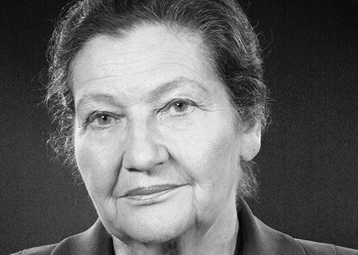

Madame Simone Veil
Une humaniste engagée

Une femme de coeur et d'esprit
Voici quelques points clés de sa vie
- 1927 - Née le 13 juillet à Nice
- 1944 - Arrestation puis déportation au camp d'Auschwitz
- 1945 - Retour en france elle s'inscrit à la facultée de droit de Paris
- 1971 - Nommée au coseil d'administration de l'ORTF
- 1974 - Elle est nommée ministre de la santé par le président Valéry Giscard d'Estaing
- 1975 - Entrée en vigeur de la loi sur l'IVG
- 1976 - Elle fait adopter la loi de lutte contre le tabagisme
- 1979 - Elue présidente du Parlement européen
- 1981 - Elle reçoit le prix international Charlemagne
- 1983 - Création du club Vauban avec son mari
- 1993 - Elle est nommée ministre d'état
- 1996 - Elle est nommée membre de la commission international des Balkans
- 1998 - Membre du conseil constitutionnel
- 2001 - Elle préside la fondation pour la mémoire de la Shoah
- 2007 - Elle édite son autobiographie (Une vie)
- 2017 - Elle décède à son domicile parisien le30 juin
"Tu as toujours rejeté les idées convenues, et j’ai toujours été frappé par ton inégalable bon sens ta détermination constitue la trame de l’armure qui t’a permis de survivre à l’enfer”
“Jean Veil”